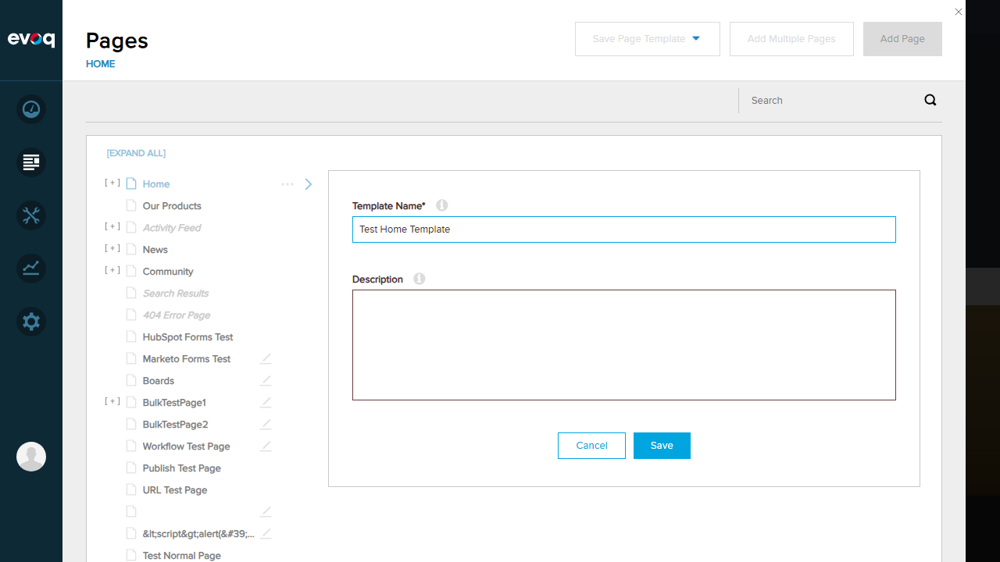
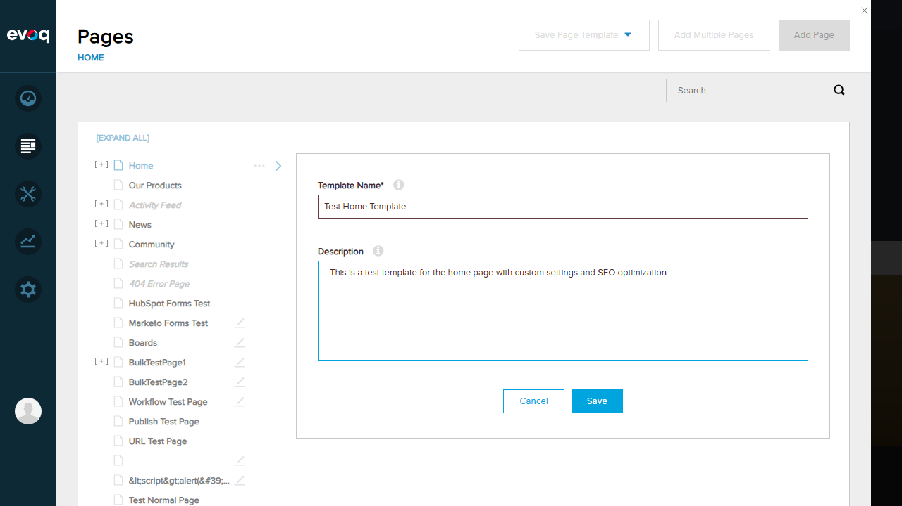
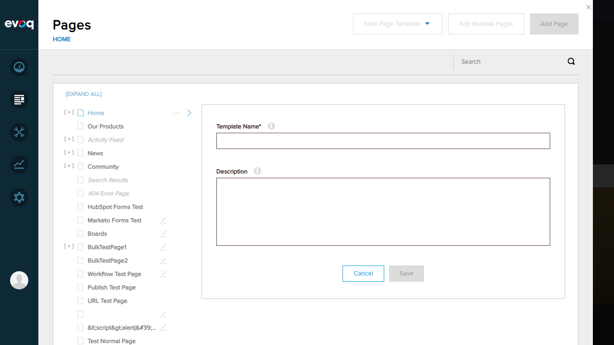
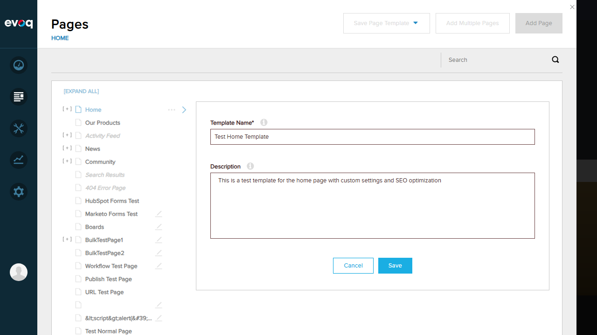
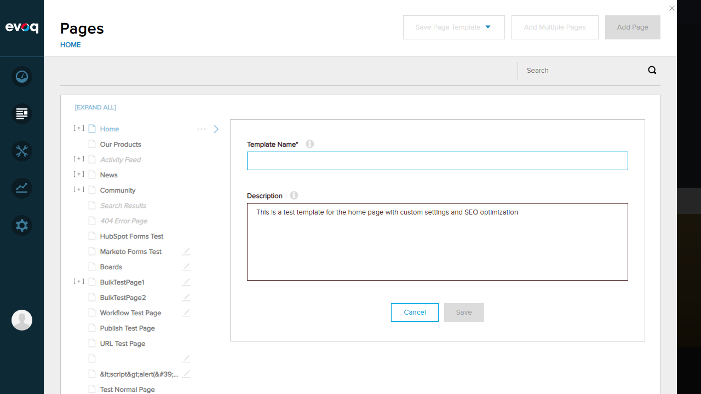

Test Report: Template Page Settings
Extension: Evoq.PersonaBar.Templates (PersonaBar Module)
Feature: Template Page Settings
Description: Configure template-specific settings like name, description, keywords, and URL
UI Location: Admin > Manage > Templates > Settings (accessed via Content > Pages > Save Page Template)
Priority: Medium
Test Date: January 6, 2026
Test Summary
Objective: Verify that users can edit the template name field
- Navigate to Content > Pages
- Select a page (Home)
- Click "Save Page Template" dropdown
- Select "Evoq Page Template"
- Enter template name "Test Home Template"
Expected Result: Template name can be entered and Save button becomes enabled
Actual Result: Template name "Test Home Template" was successfully entered. Save button became enabled after entering the name.
Objective: Verify that users can edit the template description field
- In the template creation dialog, locate the Description field
- Enter description text: "This is a test template for the home page with custom settings and SEO optimization"
Expected Result: Description can be entered successfully
Actual Result: Description text was successfully entered in the Description field.
Objective: Verify that users can set template keywords for SEO
- Open the Save Page Template dialog
- Look for Keywords field
Expected Result: Keywords field should be available for SEO configuration
Actual Result: Keywords field is NOT present in the template creation dialog. The dialog only contains Template Name and Description fields.
Note: Keywords field exists in Page Settings (Details tab) but not in the template creation dialog.
Objective: Verify that the system validates duplicate template names
- Create a template with a specific name
- Attempt to create another template with the same name
Expected Result: System should prevent duplicate template names
Actual Result: Could not test duplicate name validation because template saving failed with a 400 Bad Request error. The backend API returned an error when attempting to save template settings.
Objective: Verify that template settings can be saved successfully
- Fill in template name: "Test Home Template"
- Fill in description
- Click Save button
Expected Result: Template should be saved and appear in Templates list
Actual Result: Save failed with HTTP 400 Bad Request error. Console showed errors for SavePageDetails API call. Multiple 500 Internal Server Errors were also observed for GetPageTemplates, GetWorkflows, and GetPermissionsData endpoints.
Objective: Verify that the system handles validation errors appropriately
- Open template creation dialog
- Leave the Template Name field empty
- Observe the Save button state
Expected Result: Save button should be disabled when required fields are empty
Actual Result: Save button is correctly disabled when the Template Name field is empty. This prevents users from submitting incomplete forms.
Additional Evidence
Login Confirmation

Templates Page

Template Creation Message

Pages Panel

Observations
- Keywords Field Missing: The suggested test scenario mentions "Set template keywords for SEO" but the template creation dialog only contains Template Name and Description fields. Keywords field exists in Page Settings but not in the template creation workflow.
- Backend API Issues: Multiple 500 Internal Server Errors were observed for:
- GetPageTemplates API
- GetWorkflows API
- GetPermissionsData API
- Save Functionality: The SavePageDetails API returned 400 Bad Request when attempting to save a template, preventing full testing of save functionality.
- Template Creation Workflow: Templates are created by selecting an existing page and clicking "Save Page Template" from the Pages panel, not from the Templates management page directly.
- Client-Side Validation: The Template Name field has client-side validation that disables the Save button when empty. According to code review, there is also script injection validation (hasScript) implemented.